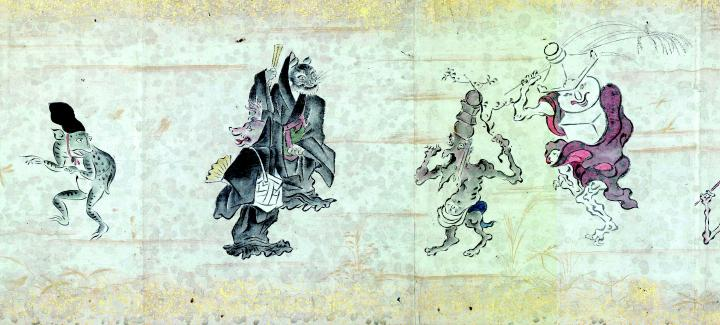

五輪塔と卒塔婆の化物、そして僧形の化物が続く。烏帽子をかぶった蛙の化物は、彼らを振り返っているように見える。
著作者：吉光／出典：親書誌：U426_nichibunken_0057：百鬼ノ図；ヒャッキノズ／日付：2007／資源識別子：U426_nichibunken_0057_0005_0000
Copyright (c)2010- International Research Center for Japanese Studies, Kyoto, Japan. All rights reserved.